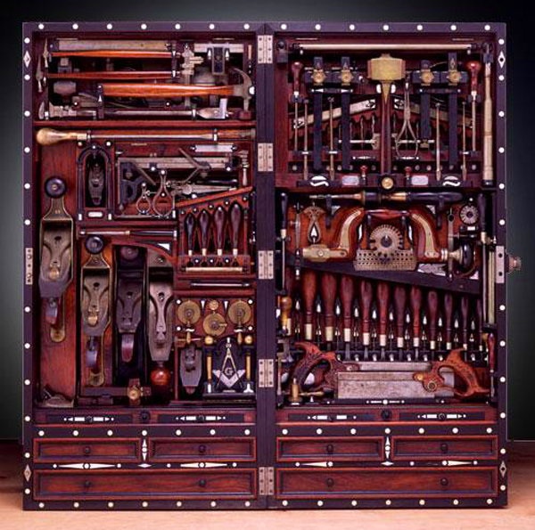

Portfolio
Work History
| Title | Company | Duration |
|---|---|---|
| Carpenter Super Heroe | This Old House | 1989-2002 |
| Chief Design Officer | The New Yankee Workshop | 1992-2007 |
| Furniture Guy | The Woodshop | 1980-Present |
"Any peice of funiture, any type of wood, any finish; I will build 2 of the same thing."
In 1988, Russell Morash planned to launch a spinoff of This Old House called The New Yankee Workshop, and he needed a convenient place to videotape so they used the shop in the small barn that Abram built in 1979 in Morash's backyard. The shop's layout and equipment were mostly Abram's preferences. The New Yankee Workshop first aired in 1989 with Abram as the host.[4] The New Yankee Workshop showcased furniture or other projects over the course of one or more episodes, and emphasized the use of power tools and equipment. The show aired for 21 seasons on PBS.

| Title | Company | Duration |
|---|---|---|
| Carpenter Super Heroe | This Old House | 1989-2002 |
| Chief Design Officer | The New Yankee Workshop | 1992-2007 |
| Furniture Guy | The Woodshop | 1980-Present |